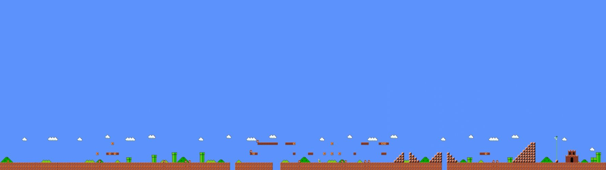

<div class="third-wrapper">
  

  <div class="third-container">
    <h1>Próximos desafios que estão por vir</h1>

    <h3 class="third-text">
      De acordo com as pesquisas mais recentes da neurociência, divertir-se enquanto aprende aproveita recursos cognitivos únicos.
      Associar recompensa e prazer à informação, fortalece e amplia as redes de memória e alterna o pensamento abstrato e a atenção concentrada.
    </h3>
  
    <div class="third-container-square">
      <div class="third-square"></div>
      <div class="third-square"></div>
    </div>
  </div>
</div>
